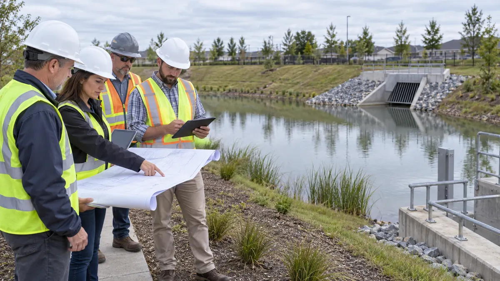
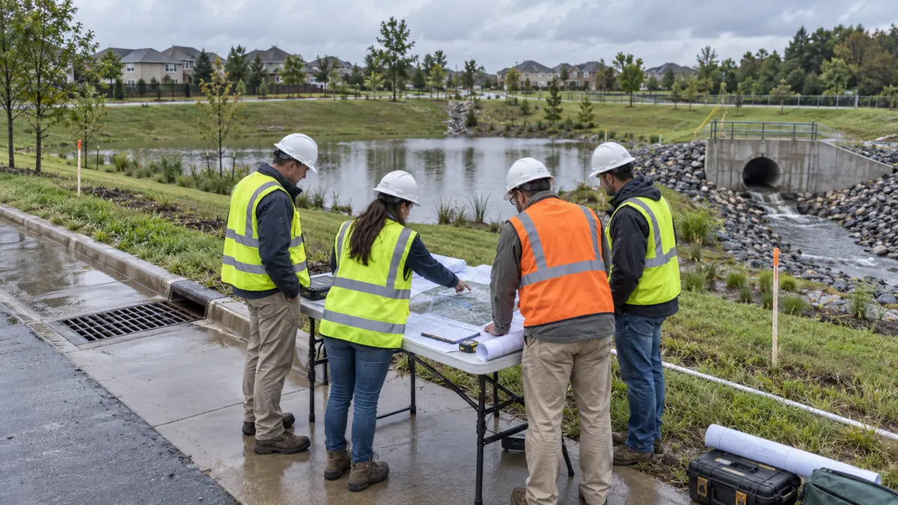
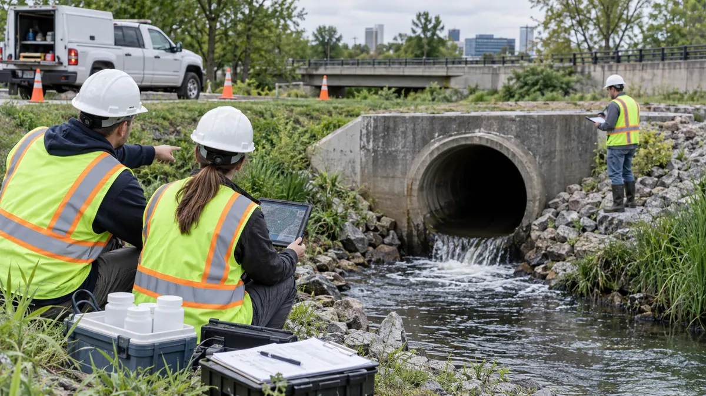
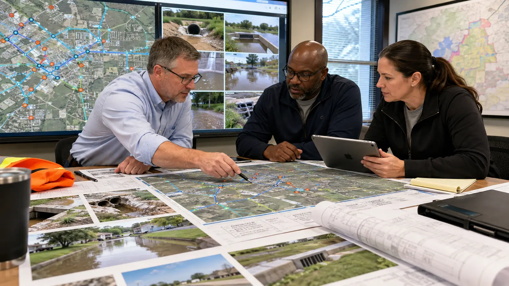
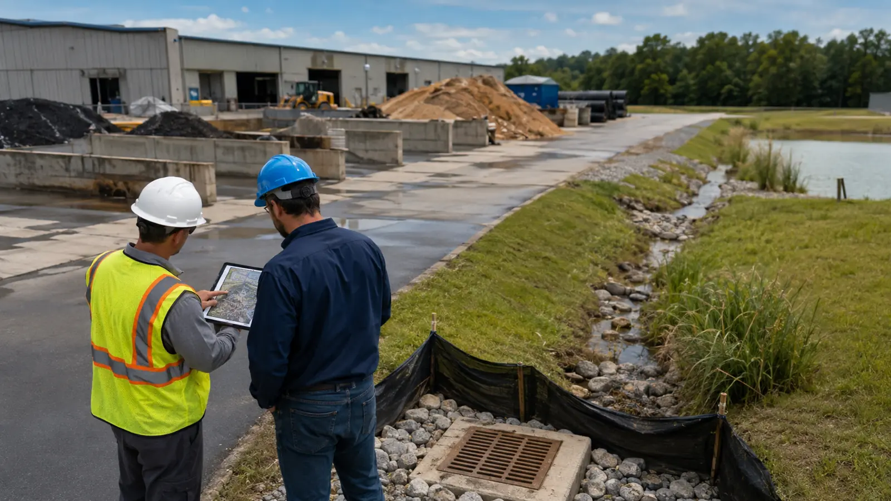
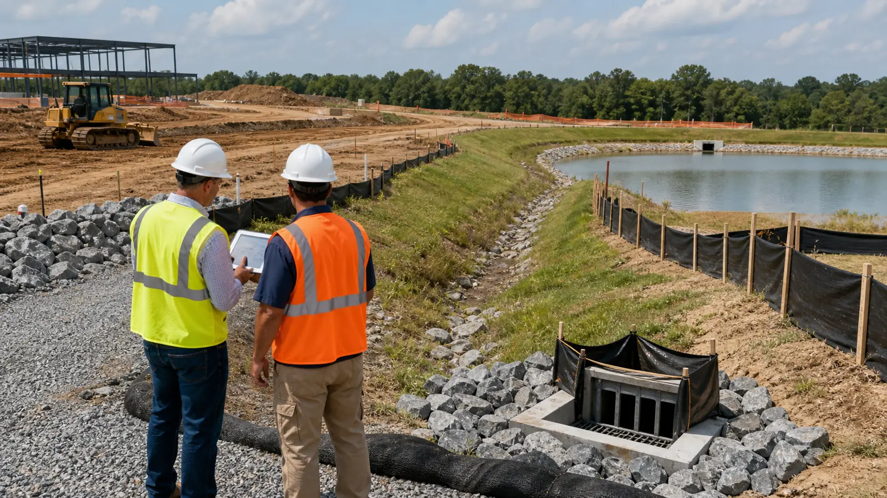

Stormwater Planning & SWPPP Insights
News, technical guidance, and regulatory compliance insights on NPDES permits, SWPPP writing, BMP inspection, and erosion control from stormwaterplanning.us.
September 27, 2026
Stormwater Drainage Study Scope: What Cities and Developers Should Define Before Modeling Begins
September 26, 2026
Outfall Screening Records: What MS4 Teams Should Document Before Field Work
September 25, 2026
Stormwater Plan Review Comment Logs: A Practical Way to Reduce Repeat Submittals
September 24, 2026
Stormwater Planning for Redevelopment and Infill Sites: What to Review Before Design Starts

September 23, 2026
Culvert and Outfall Maintenance Planning: What Municipalities Should Document Before Budget Season
September 22, 2026
Prioritizing Drainage Complaints Across a Municipal Stormwater System
September 21, 2026
SWPPP Inspection Planning Before Construction: What Teams Should Organize Before the First Rain
September 19, 2026
When a Project Needs a Stormwater Management Plan: What Owners Should Confirm Early

September 18, 2026
Flood Mitigation Project Scoping for Stormwater Systems: What to Document Before Funding Requests
September 17, 2026
Post-Construction Stormwater Maintenance Plans: What Owners and Municipalities Should Set Before Closeout
September 16, 2026
MS4 Program Review for Municipalities: What to Check Before the Next Permit Cycle
September 15, 2026
Erosion and Sediment Control Planning Before Land Disturbance: What to Set Before Grading Starts
September 14, 2026
BMP Selection Mistakes That Create Long-Term Stormwater Maintenance Problems
September 13, 2026
Stormwater Submittal Completeness for Developers: What Reviewers Need Before Approval
September 12, 2026
Drainage Due Diligence Before Buying or Developing Land: What to Review Early

September 11, 2026
Outfall Screening and IDDE Planning for MS4 Communities: What to Organize Before Field Work
September 5, 2026
GIS Storm Drain Inventory Planning: What Municipalities Should Map Before Setting Priorities

September 4, 2026
Stormwater Utility Capital Planning: How Municipalities Turn Drainage Needs Into Defensible Projects
September 4, 2026
Green Infrastructure Planning for Tight Urban Sites: What to Review Before Choosing BMPs

September 3, 2026
Industrial Stormwater Planning for Outdoor Operations: What Facilities Should Document Before Problems Start
September 2, 2026
Stormwater Plan Review for Infill Development: What to Resolve Before Civil Submittal

September 2, 2026